Soient \(E,A\) des ensembles.
On dit que \(A\) est une partie (ou un sous-ensemble) de \(E\) si pour tout \(x\in A, x \in E\).
La partie vide \(\emptyset\) est un sous-ensemble de \(E\).
\(E\) est un sous-ensemble de \(E\).
Soit \(a \in E\), \(\left\{a\right\}\) est une partie de \(E\).
Soient \(a_1,\ldots, a_n \in E\), \(\left\{a_1,\ldots,a_n\right\}\) est une sous-partie de \(E\).
On peut considérer l’ensemble des parties de \(E\), que l’on note \(\mathscr{P}(E)\). Alors, les éléments de \(\mathscr{P}(E)\) sont des parties de \(E\).
Si \(E =\left\{1,2,3\right\}\), \(\mathscr{P}(E) = \left\{\emptyset, \left\{1\right\},\left\{2\right\},\left\{3\right\},\left\{1,2\right\},\left\{1,3\right\},\left\{2,3\right\},\left\{1,2,3\right\}\right\}\).
Soient \(A,B \in \mathscr{P}(E)\),
On dit que \(A\) est inclus dans \(B\) si pour tout \(x\in A, x \in B\).
On note alors \(A\subset B\).
Si \(A \subset B\), on peut avoir \(A \neq B\) et on note parfois \(A \subsetneq B\).
\(A=B \iff A\subset B \text{ et }B\subset A\).
Soient \(A,B \in \mathscr{P}(E)\),
L’union (ou la réunion) de \(A\) et \(B\) est la partie \(A \cup B\) de \(E\) définie par
\[A \cup B = \left\{x \in E / x\in A \text{ ou }x \in B\right\}.\]
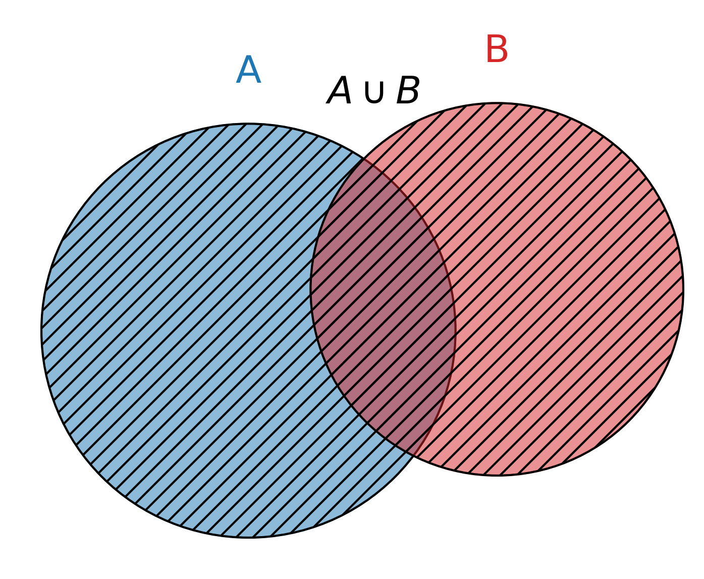
Soient \(A,B \in \mathscr{P}(E)\),
L’intersection de \(A\) et \(B\) est la partie \(A \cap B\) de \(E\) définie par
\[A \cap B = \left\{x \in E / x\in A \text{ et }x \in B\right\}.\]
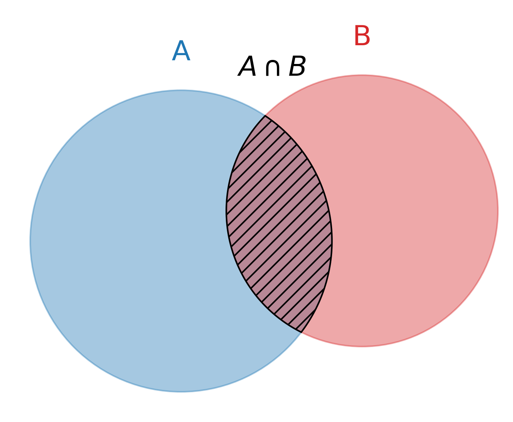
(Distributivité)
Pour \(A,B,C \in \mathscr{P}(E)\),
\(A \cap (B\cup C) = (A\cap B) \cup (A \cap C)\),
\(A \cup (B\cap C) = (A\cup B) \cap (A \cup C)\).
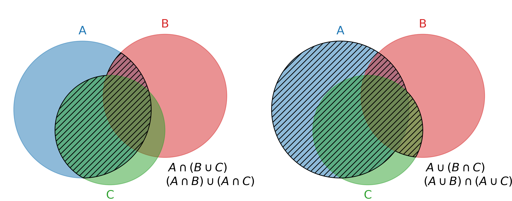
(\(A \cap (B\cup C) \subset (A\cap B) \cup (A \cap C)\))
Soit \(x \in A \cap (B\cup C)\) alors \(x \in A \text{ et }(x \in B \text{ ou }x\in C)\).
Si \(x \in B\), \(x\in A \cap B\) donc \(x \in (A\cap B) \cup (A \cap C)\).
Si \(x \in C\), \(x\in A \cap C\) donc \(x \in (A\cap B) \cup (A \cap C)\).
(\(A \cap (B\cup C) \supset (A\cap B) \cup (A \cap C)\))
Soit \(x \in (A\cap B) \cup (A \cap C)\), \(x \in A\cap B \text{ ou }x \in A\cap C\).
Si \(x \in A\cap B\), \(x \in A\) et \(x\in B \subset B\cup C\) donc \(x \in A \cap (B\cup C)\).
Si \(x \in A\cap C\), \(x \in A\) et \(x\in C \subset B\cup C\) donc \(x \in A \cap (B\cup C)\).
(\(A \cup (B\cap C) \subset (A\cup B) \cap (A \cup C)\)).
Soit \(x \in A \cup (B\cap C)\) alors \(x \in A \text{ ou }x \in B\cup C\) donc \(x \in A \text{ ou }(x \in B \text{ et }x\in C)\).
donc \(x \in A \cup B \text{ ou }(x \in B \text{ et }x\in C)\).
Si \(x \in A\), \(x \in A\cup B\) et \(x \in A\cup C\) donc \(x \in (A\cup B) \cap (A \cup C)\).
Si \(x \in B \text{ et }x\in C\) alors \(x\) \(x \in A\cup B\) et \(x \in A\cup C\) donc \(x \in (A\cup B) \cap (A \cup C)\).
(\(A \cup (B\cap C) \supset (A\cup B) \cap (A \cup C)\)).
Soit \(x \in (A\cup B) \cap (A \cup C)\), \(x \in A\cup B \text{ et }x \in A \cup C\).
Si \(x \in A, x \in A \cup (B\cap C)\).
Si \(x \notin A\), \(x \in B \text{ et }x \in C\) donc \(x \in B\cap C\) donc \(x \in A \cup (B\cap C)\).
Soit \(A \in \mathscr{P}(E)\).
La partie complémentaire de \(A\) dans \(E\) est \[\{x \in E / x \notin A\},\]
notée \(\overline{A}\) ou \(E \setminus A\) ou .
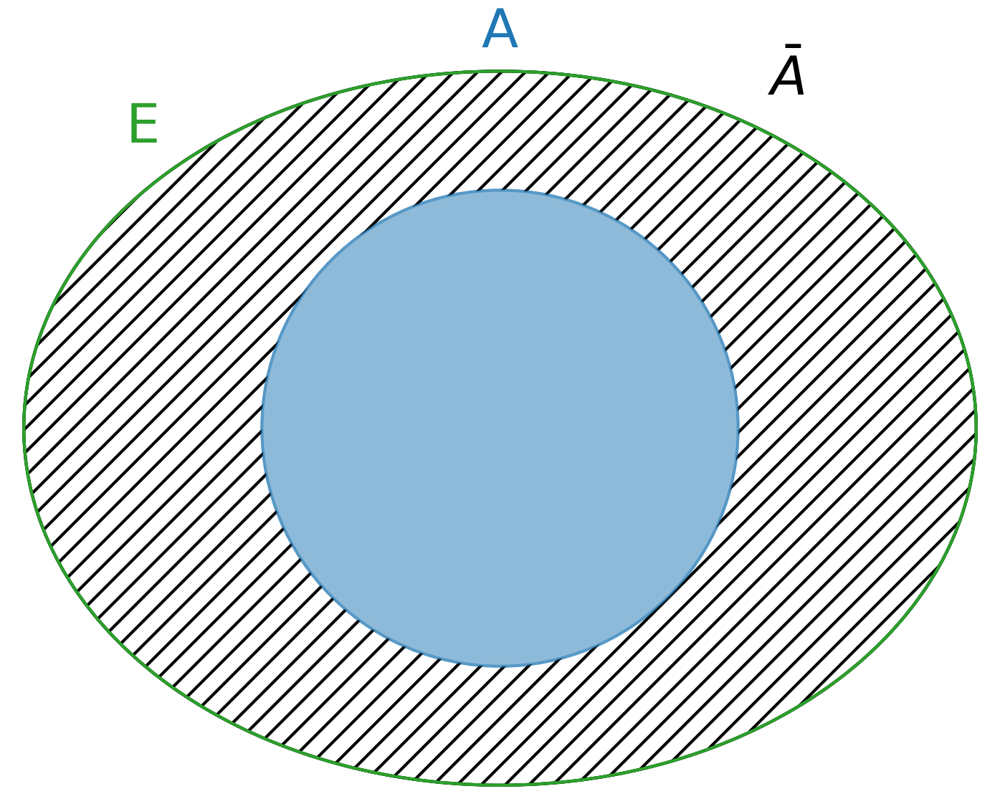
Pour \(A, B \in \mathscr{P}(E)\),
\(\overline{A\cup B} = \overline{A} \cap \overline{B}\),
\(\overline{A\cap B} = \overline{A} \cup \overline{B}\).
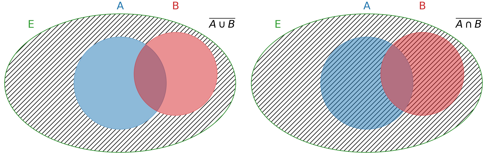
Soit \(x \in E\), \[\begin{aligned} x \in \overline{A\cup B} & \iff x \notin A \cup B \\ & \iff x \notin A \text{ et }x \notin B \\ & \iff x \in \overline{A} \text{ et }x \in \overline{B} \\ & \iff x \in \overline{A} \cap \overline{B}. \end{aligned}\]
Soit \(x \in E\), \[\begin{aligned} x \in \overline{A\cap B} & \iff x \notin A \cap B \\ & \iff x \notin A \text{ ou }x \notin B \\ & \iff x \in \overline{A} \text{ ou }x \in \overline{B} \\ & \iff x \in \overline{A} \cup \overline{B}. \end{aligned}\]
Soient \(A,B \in \mathscr{P}(E)\), on considère \(A \setminus B\) définie par \[A \setminus B = A \cap \overline{B}= \left\{x \in A / x\notin B\right\}.\]
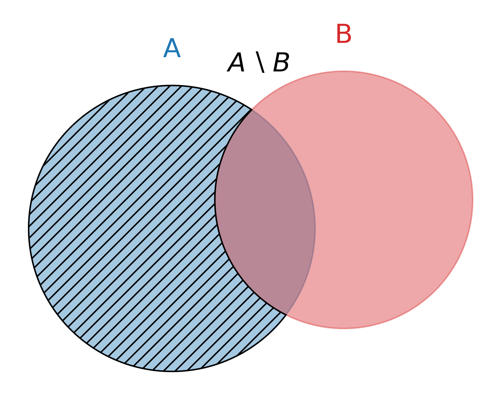
Soit \(E\) un ensemble fini, le cardinal de \(E\) est le nombre d’éléments noté \(E\).
Si \(\mathop{\mathrm{card}}E =n, \mathscr{P}(E)\) est fini de cardinal \(2^n\).
Nous avons déjà prouver ce résultat à l’aide des coefficients binomiaux et du binôme de Newton mais on propose une seconde preuve ici.
Prouvons ce résultat par récurrence sur \(n = \mathop{\mathrm{card}}E\).
INITIALISATION : Pour \(n=0\), \(\mathop{\mathrm{card}}E = 0\) donc \(E = \emptyset\) et \(\mathscr{P}(E) = \left\{\emptyset\right\}\), de cardinal \(2^0=1\).
HÉRÉDITÉ : Soit \(n \in \mathbb{N}\), supposons que pour tout ensemble fini \(E'\) de cardinal \(n\), \(\mathscr{P}(E')\) est fini de cardinal \(2^n\).
Soit \(E = \{x_1,\ldots,x_n,x_{n+1}\}\) un ensemble fini de cardinal \(n+1\), on considère \(E' = \{x_1,\ldots,x_{n}\}\).
Soit \(A\) une partie de \(E\),
Si \(x_{n+1}\notin A\), \(A\) est une partie de \(E'\),
Si \(x_{n+1}\in A\), \(B = A \setminus \{x_{n+1}\}\) est une partie de \(E'\).
Or il y a \(2^n\) parties de \(E'\). Donc il y a \(2^n+2^n = 2^{n+1}\) parties de \(E\).
Donc \(\mathop{\mathrm{card}}\mathscr{P}(E) = 2^{n+1}\).
CONCLUSION : Pour tout ensemble fini \(E\) de cardinal \(n\), \(\mathscr{P}(E)\) est fini de cardinal \(2^n\).
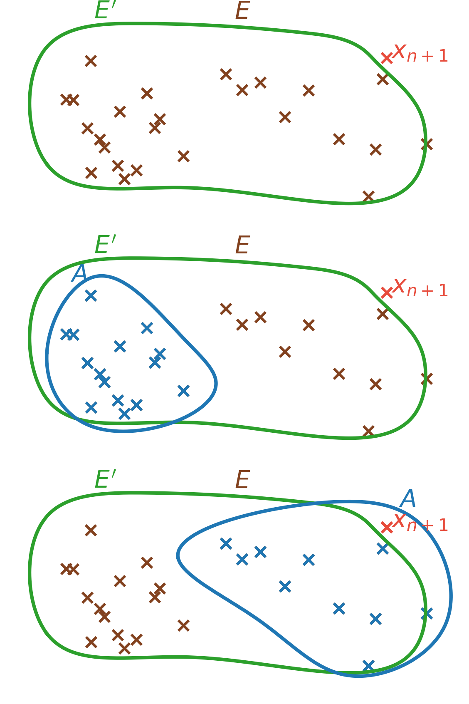
Soient \(E_1,\ldots, E_n\) des ensembles non vides, on défini l’ensemble produit de \(E_1,\ldots, E_n\), noté \(E_1 \times E_2 \times \ldots \times E_n\) par \[E_1 \times E_2 \times \ldots \times E_n = \left\{(x_1,x_2,\ldots,x_{n}) / \forall 1 \leq k \leq n, x_k \in E_k\right\}.\]
Si pour tout \(1 \leq k \leq n\), \(E_k = E\), on le note \(E^n\).
\(\mathbb{R}^2 = \left\{(x,y) / x,y \in \mathbb{R}\right\}\).
Une fonction (ou application) \(f\) entre d’un ensemble dans un autre est définie par :
un ensemble non vide \(E\), dit "ensemble de départ",
un ensemble non vide \(F\), dit "ensemble d’arrivée",
un procédé permettant d’associer à un élément quelconque de \(E\), un unique élément de \(F\).
On écrit alors \(f : E \to F\) et on définit \(\mathscr{F}(E,F)\) l’ensemble des fonctions de \(E\) dans \(F\).
Soit \(x \in E\), \(f(x) \in F\) est appelé l’image de \(x\) par \(f\) noté \(f(x)\) tandis que \(x\) est appelé un antécédent de \(y = f(x)\).
On introduit \(f\) sous la forme \(\begin{array}{lllll} f & : & E & \to & F \\ & & x & \mapsto & f(x) \end{array}\) ou de manière concise \(f : x \in E \mapsto f(x) \in F\).
Le graphe de \(f\) est la partie de \(E \times F\) définie par \(\left\{(x,f(x))/x \in E\right\}\), notée \(\Gamma_f\).
Si l’image d’un élément de \(x \in E\) est unique, en général, un élément \(y \in F\) peut admettre plusieurs antécédents.
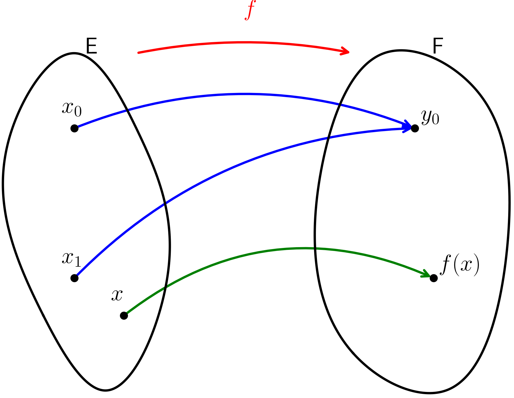
\(\begin{array}{lllll} f & : & \mathbb{C} & \to & \mathbb{R} \\ & & z & \mapsto & |z| \end{array}\),
Avec \(\mathscr{P}\) le plan usuel et \(\mathscr{D}\) droite de \(\mathscr{P}\), \(\begin{array}{lllll} f & : & \mathscr{P} & \to & \mathscr{P} \\ & & M & \mapsto & f(M) \text{ le projeté orthogonal de $M$ sur $\mathscr{D}$.} \end{array}\),
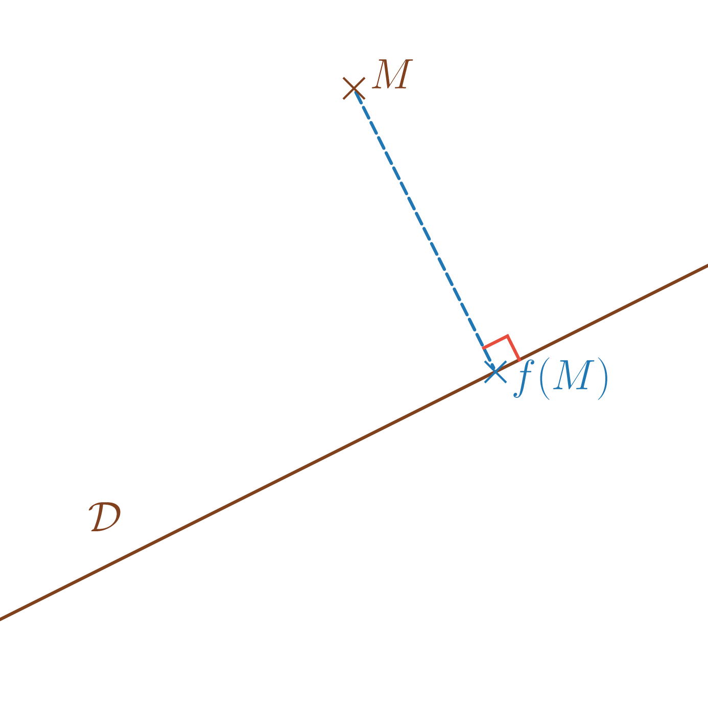
Avec \(\overrightarrow{\mathscr{P}}\) l’ensemble des vecteurs du plans, \[\begin{array}{lllll} f & : & \overrightarrow{\mathscr{P}}\times\overrightarrow{\mathscr{P}} & \to & \mathbb{R} \\ & & (\overrightarrow{u},\overrightarrow{v}) & \mapsto & \overrightarrow{u}.\overrightarrow{v},\text{ produit scalaire usuel de $\overrightarrow{u}$ et $\overrightarrow{v}$.} \end{array}\],
Soit \(E\) ensemble quelconque et \(A \in \mathscr{P}(E)\),
\[\begin{array}{lllll} f & : & \mathscr{P}(E) & \to & \mathscr{P}(E) \\ & & X & \mapsto & A \cap X \end{array}\]
Avec \(E = \mathscr{F}(\mathbb{R},\mathbb{R})\), \[\begin{array}{lllll} \varphi & : & E & \to & E \\ & & f & \mapsto & f(0) \end{array} .\]
Soient \(f,g\) deux fonctions.
\(f\) et \(g\) sont dites égales si \(f\) et \(g\) ont
même ensemble de départ \(E\),
même ensemble d’arrivée \(F\),
\(\forall x,y \in E, f(x)=g(x)\).
\(\begin{array}{lllll} f & : & \mathbb{R} & \to & \mathbb{R} \\ & & x & \mapsto & x^2 \end{array}\) et \(\begin{array}{lllll} g & : & \mathbb{R} & \to & \mathbb{R}^+ \\ & & x & \mapsto & x^2 \end{array}\) ne sont pas égales.
Soit \(f \in \mathscr{F}(E,F)\) et \(A \in \mathscr{P}(E)\), non vide, on définit l’image directe de \(A\), notée \(f(A)\) par \[f(A) := \left\{f(x) / x \in A\right\}.\] Si \(A = \emptyset\), on pose \(f(A) = \emptyset\).
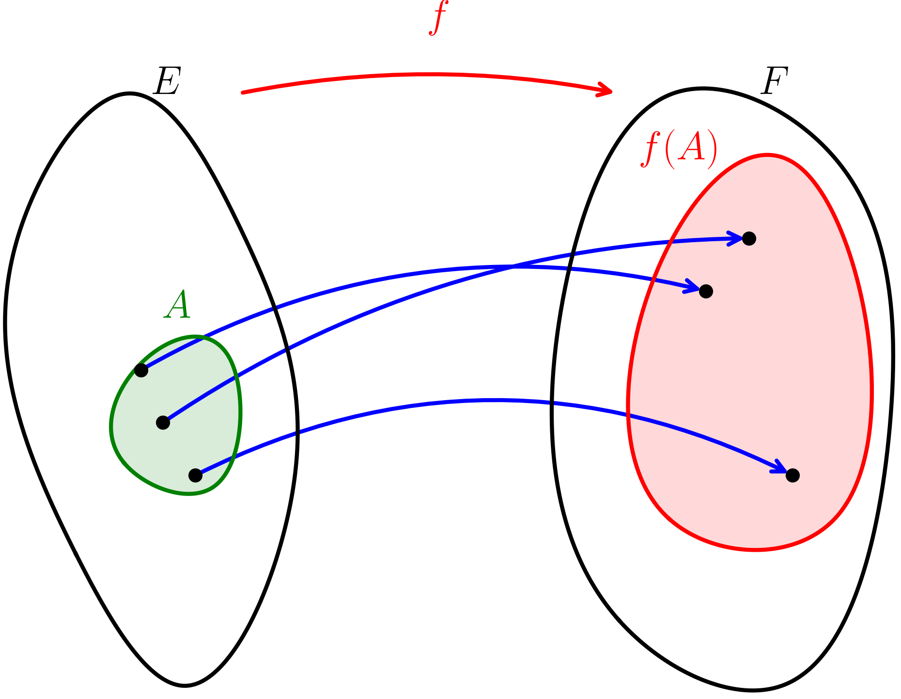
Si \(A = E\), \(f(E)\) est l’image de \(f\), notée \(\mathop{\mathrm{Im}}f = \left\{f(x) \in F / x \in E\right\}\).
Avec \(\begin{array}{lllll} f & : & \mathbb{R} & \to & \mathbb{R} \\ & & x & \mapsto & x^2 \end{array}\), \(f([-2,1]) = [0,4]\).
Avec \(\mathscr{P}\) le plan usuel et \(\mathscr{D}\) droite de \(\mathscr{P}\) et \(\begin{array}{lllll} f & : & \mathscr{P} & \to & \mathscr{P} \\ & & M & \mapsto & f(M) \text{ le projeté orthogonal de $M$ sur $\mathscr{D}$.} \end{array}\).
Soit \(\Delta\) la droite de \(\mathscr{P}\), perpendiculaire à \(\mathscr{D}\), \(f(\Delta) = \left\{\text{Point d'intersection de $\mathscr{D}$ et $\Delta$}\right\}.\)
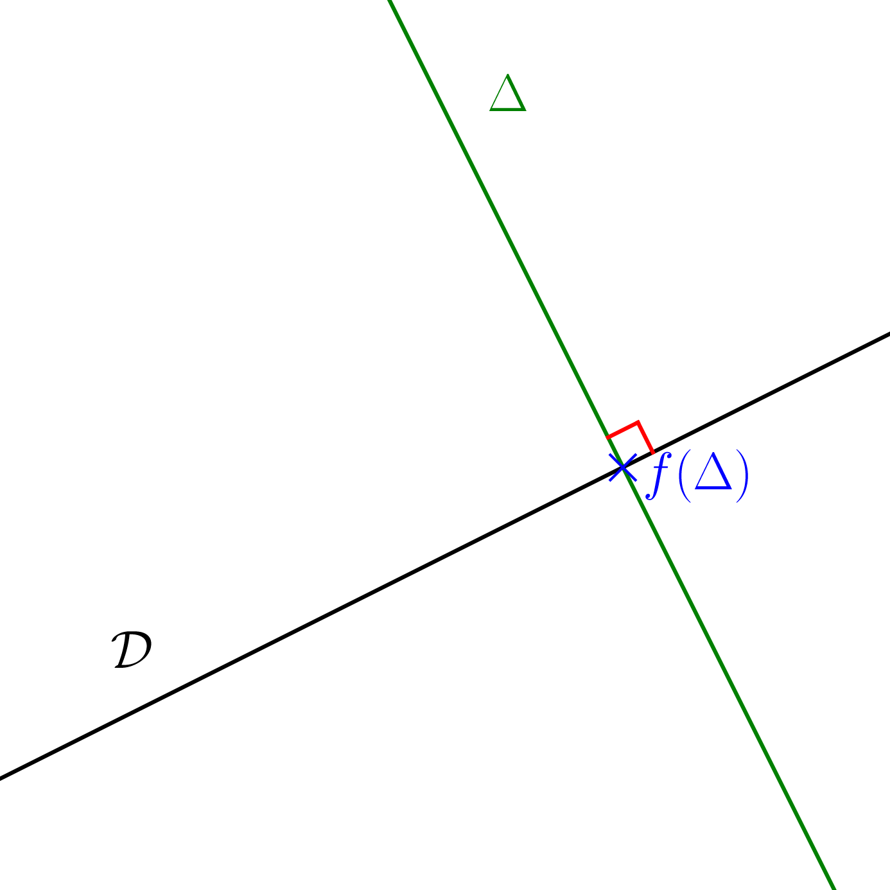
Soit \(E = \mathscr{F}(\mathbb{R},\mathbb{R})\), \(A = \left\{f \in E / \forall x \in \mathbb{R}^{+}, f(x) \geq 1\right\}\) et \(\begin{array}{lllll} \varphi & : & E & \to & E \\ & & f & \mapsto & f(0) \end{array} ,\) montrons que \(f(A) = [1,+\infty[\).
\(f(A) \subset [1,+\infty[\) car si \(f\in A, f(0) \geq 1\) donc \(\varphi(f) \geq 1\).
\(f(A) \supset [1,+\infty[\) car soit \(\alpha \in [1,+\infty[\), avec \(f : x \in \mathbb{R}\mapsto \alpha\), \(f \in A\) et \(\varphi(f) = \alpha\).
Soit \(E\) ensemble quelconque et \(A \in \mathscr{P}(E)\),
\[\begin{array}{lllll} f & : & \mathscr{P}(E) & \to & \mathscr{P}(E) \\ & & X & \mapsto & A \cap X \end{array}\]
Montrons que \(\mathop{\mathrm{Im}}f = \mathscr{P}(A)\).
\(\mathop{\mathrm{Im}}f \subset \mathscr{P}(A)\) car si \(X \in \mathscr{P}(E)\), \(f(X) = X \cap A \in \mathscr{P}(A)\).
\(\mathop{\mathrm{Im}}f \supset \mathscr{P}(A)\) car si \(Y \in \mathscr{P}(A)\), \(f(Y) = Y \cap A = Y\).
Soit \(f \in \mathscr{F}(E,F)\) et \(B \in \mathscr{P}(F)\), la préimage (ou image réciproque) de \(B\) par \(f\) est la partie de \(E\), notée \(f^{-1}(B)\) et égale à \[f^{-1}(B) = \left\{x \in E / f(x) \in B\right\}.\]
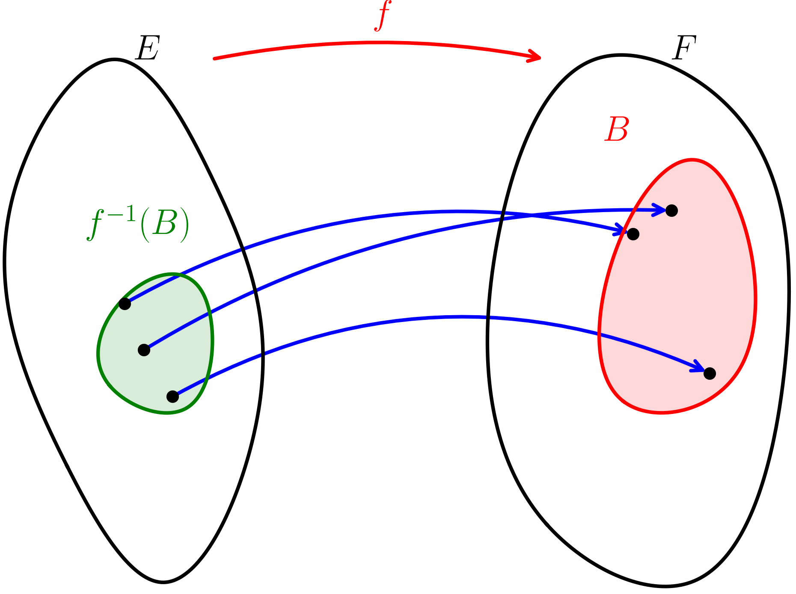
Soit \(f \in \mathscr{F}(E,F)\) et \(B \in \mathscr{P}(F)\), \[f^{-1}(B) \neq \emptyset \iff B \cap \mathop{\mathrm{Im}}f \neq \emptyset.\]
Si \(f^{-1}(B) \neq \emptyset\), il existe \(x \in E\) tel que \(f(x) \in B\) donc \(f(x) \in B \cap \mathop{\mathrm{Im}}f \neq \emptyset\).
Si \(B \cap \mathop{\mathrm{Im}}f \neq \emptyset\), il existe \(y \in B \cap \mathop{\mathrm{Im}}f\). Comme \(y \in \mathop{\mathrm{Im}}f\), il existe \(x \in E\) tel que \(f(x) = y\) et donc \(x \in f^{-1}(B) \neq \emptyset\).
Exercice — Soit \(\begin{array}{lllll} f & : & \mathbb{R} & \to & \mathbb{R} \\ & & x & \mapsto & x^2 \end{array}\), \(B_1 = [0,2]\) et \(B_2 = [-1,3]\). Déterminer \(f^{-1}(B_1), f^{-1}(B_2), f\left(f^{-1}(B_2)\right)\).
Corrigé —
\(f^{-1}(B_1) = [-\sqrt{2},\sqrt{2}]\),
\(f^{-1}(B_2) = [-\sqrt{3},\sqrt{3}]\),
\(f\left(f^{-1}(B_2)\right)= [0,3]\).
Comme l’illustre l’exemple précédent, en général \(f(f^{-1}(B)) \neq B\).
Avec \(\mathscr{P}\) le plan usuel et \(\mathscr{D}\) droite de \(\mathscr{P}\) et \(\begin{array}{lllll} f & : & \mathscr{P} & \to & \mathscr{P} \\ & & M & \mapsto & f(M) \text{ le projeté orthogonal de $M$ sur $\mathscr{D}$.} \end{array}\).
Soit \(M_0 \in \mathscr{P}\),
Si \(M_0 \notin \mathscr{D}\), \(f^{-1}(M_0) = \emptyset\)
Si \(M_0 \in \mathscr{D}\), \(f^{-1}(M_0) = \text{ la droite perpendiculaire à $\mathscr{D}$ passant par $M_0$.}\)
Exercice — Soit \((0,\overrightarrow{i},\overrightarrow{j})\) repère de \(\mathscr{P}\) et \(\begin{array}{lllll} f & : & \mathscr{P} & \to & \mathbb{R} \\ & & M(x,y) & \mapsto & y-x^2 \end{array}\), représenter \(f^{-1}([1,+\infty[)\).
Corrigé — \[\begin{aligned} f^{-1}([1,+\infty[) & = \left\{M \in \mathscr{P}/ f(M) \in [1,+\infty[\right\} \\ & = \left\{M(x,y) \in \mathscr{P}/ y-x^2 \geq 1\right\} \\ & = \left\{M(x,y) \in \mathscr{P}/ y \geq 1+x^2\right\} \\ \end{aligned}\]
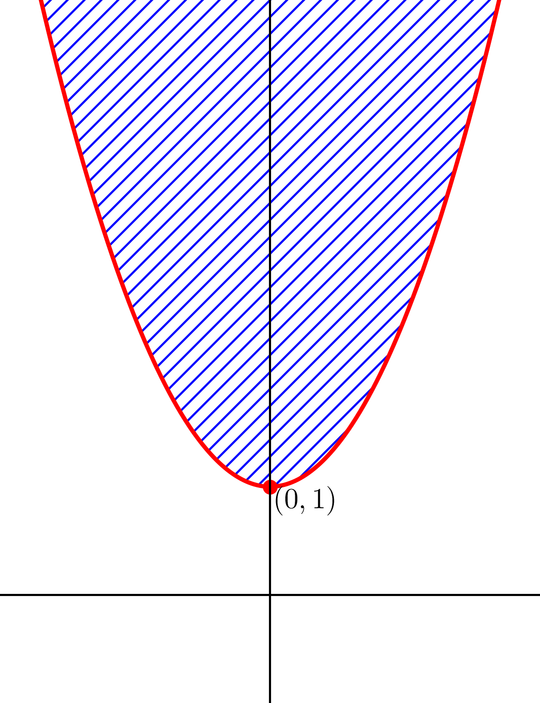
Soit \(f \in \mathscr{F}(E,F)\), \(f\) est injective (ou une injection de \(E\) dans \(F\)) si \[\forall x,x' \in E, x \neq x' \Longrightarrow f(x) \neq f(x')\] ou de façon équivalente, \[\forall x,x' \in E, f(x) = f(x') \Longrightarrow x=x'.\]
Autrement dit, chaque élément de \(\mathop{\mathrm{Im}}f\) admet un unique antécédent.
\(f \text{ injective} \iff \text{Pour tout } b \in F, \text{ l'équation $f(x)=b$ admet au plus une solution dans $E$.}\)
\((\Longrightarrow)\) Si \(f\) est injective, soit \(b \in F\), supposons que l’équation \(f(x)=b\) admet \(x_1,x_2 \in E\) comme solution.
Alors, \(f(x_1) = f(x_2) = b\) donc \(x_1=x_2\).
\((\Longleftarrow)\) Soient \(x_1,x_2 \in E\) tels que \(f(x_1) = f(x_2) \in F\).
Alors \(x_1\) et \(x_2\) sont solutions de l’équation \(f(x)=f(x_1)\) donc \(x_1 = x_2\).
Soit \(\begin{array}{lllll} f & : & \mathbb{R} & \to & \mathbb{R} \\ & & x & \mapsto & x^2 \end{array}\) alors \(f(1) = f(-1) = 1\) donc \(f\) est non injective. En revanche, \(\begin{array}{lllll} g & : & \mathbb{R}^+ & \to & \mathbb{R} \\ & & x & \mapsto & x^2 \end{array}\) est bien injective.
Soient \(E\) ensemble quelconque et \(A \in \mathscr{P}(E)\) tel que \(A \neq E\) et \(\begin{array}{lllll} f & : & \mathscr{P}(E) & \to & \mathscr{P}(E) \\ & & X & \mapsto & A \cap X \end{array}\).
Alors, on a \(f(A) = A\) et \(f(E) = A\) avec \(E \neq A\) donc \(f\) n’est pas injective.
Soient \(E = \mathscr{F}(\mathbb{R},\mathbb{R})\) et \(\begin{array}{lllll} \varphi & : & E & \to & E \\ & & f & \mapsto & f(0) \end{array}\), alors avec \(\begin{array}{lllll} f & : & \mathbb{R} & \to & \mathbb{R} \\ & & x & \mapsto & 0 \end{array}\) et \(\begin{array}{lllll} g & : & \mathbb{R} & \to & \mathbb{R} \\ & & x & \mapsto & x \end{array}\), \(f \neq g\) et \(\varphi(f) = \varphi(g) = 0\) donc \(\varphi\) est non injective.
Soit \(f \in \mathscr{F}(E,F)\), \(f\) est surjective (ou une surjection de \(E\) dans \(F\)) si \[\begin{aligned} f \text{ surjective} & \iff \mathop{\mathrm{Im}}f = F \\ & \iff \forall y \in F, \exists x \in E / f(x) = y. \end{aligned}\]
Autrement dit, chaque élément de \(F\) admet au moins un antécédent.
\(f\) surjective si et seulement si Pour tout \(b \in F\), l’équation \(f(x)=b\) admet au moins une solution dans \(E\).
Soit \(\begin{array}{lllll} f & : & \mathbb{R} & \to & \mathbb{R} \\ & & x & \mapsto & x^2 \end{array}\) alors \(f\) est non surjective car \(\mathop{\mathrm{Im}}f = \mathbb{R}^{+}\). En revanche, \(\begin{array}{lllll} g & : & \mathbb{R} & \to & \mathbb{R}^{+} \\ & & x & \mapsto & x^2 \end{array}\) est bien surjective.
Avec \(\mathscr{P}\) le plan usuel, \(\mathscr{D}\) droite de \(\mathscr{P}\) et \(\begin{array}{lllll} f & : & \mathscr{P} & \to & \mathscr{P} \\ & & M & \mapsto & f(M) \text{ le projeté orthogonal de $M$ sur $\mathscr{D}$.} \end{array}\), \(f\) n’est pas surjective car \(\mathop{\mathrm{Im}}f = \mathscr{D}\).
Soient \(E = \mathscr{F}(\mathbb{R},\mathbb{R})\) et \(\begin{array}{lllll} \varphi & : & E & \to & E \\ & & f & \mapsto & f(0) \end{array}\), alors \(\varphi\) est injective car pour \(\alpha \in \mathbb{R}\), \(\alpha = \varphi\left(f_\alpha\right) \text{ avec }f_\alpha : x \in \mathbb{R} \mapsto \alpha \in \mathbb{R}\). Soient \(E\) ensemble quelconque et \(A \in \mathscr{P}(E)\) tel que \(A \neq E\) et \(\begin{array}{lllll} f & : & \mathscr{P}(E) & \to & \mathscr{P}(E) \\ & & X & \mapsto & A \cap X \end{array}\).
Alors, \(f\) est non surjective car \(\mathop{\mathrm{Im}}f = \mathscr{P}(A) \neq \mathscr{P}(E)\).
Soit \(f \in \mathscr{F}(E,F)\), \(f\) est bijective (ou une bijection de \(E\) dans \(F\)) si elle est injective et surjective. Autrement dit, \[\forall y \in F, \exists! x \in E, f(x)=y.\] On note \(\mathcal{B}(E,R)\) l’ensemble des fonctions bijectives de \(E\) dans \(F\).
\(f\) bijective si et seulement si pour tout \(b \in F\), l’équation \(f(x)=b\) admet une unique solution dans \(E\).
Soit \(E\) un ensemble non vide, \(\begin{array}{lllll} f & : & E & \to & E \\ & & x & \mapsto & x \end{array}\) est une bijection, appelée la fonction identité et notée \(\mathrm{id}_{E}\).
\(\begin{array}{lllll} f & : & \left[-\frac{\pi}{2},\frac{\pi}{2}\right] & \to & \left[-1,1\right] \\ & & x & \mapsto & \sin x \end{array}\) est bijective.
Si \(E = \left\{1,2,3\right\}\),
\(\mathscr{B}(E)=\left\{ \begin{aligned} &\begin{array}{lllll} f & : & E & \to & E\\ & & 1 & \mapsto & 1\\ & & 2 & \mapsto & 2\\ & & 3 & \mapsto & 3 \end{array}, \begin{array}{lllll} f & : & E & \to & E\\ & & 1 & \mapsto & 2\\ & & 2 & \mapsto & 1\\ & & 3 & \mapsto & 3 \end{array}, \begin{array}{lllll} f & : & E & \to & E\\ & & 1 & \mapsto & 3\\ & & 2 & \mapsto & 2\\ & & 3 & \mapsto & 1 \end{array},\\[0.5em] &\begin{array}{lllll} f & : & E & \to & E\\ & & 1 & \mapsto & 1\\ & & 2 & \mapsto & 3\\ & & 3 & \mapsto & 2 \end{array}, \begin{array}{lllll} f & : & E & \to & E\\ & & 1 & \mapsto & 2\\ & & 2 & \mapsto & 3\\ & & 3 & \mapsto & 1 \end{array}, \begin{array}{lllll} f & : & E & \to & E\\ & & 1 & \mapsto & 3\\ & & 2 & \mapsto & 1\\ & & 3 & \mapsto & 2 \end{array} \end{aligned} \right\}\)
donc \(\mathscr{B}(E)\) est de cardinal fini \(6 (=3!)\).
Soient \(f \in \mathscr{F}(E,F), g \in \mathscr{F}(F,G)\) telles que pour tout \(x\in E\), \(f(x) \in F\).
On peut considérer la fonction composée de \(f\) par \(g\), notée \(g\circ f\) et définie par \[\begin{array}{lllll} g\circ f & : & E & \to & G \\ & & x & \mapsto & g(f(x)) \end{array} .\]
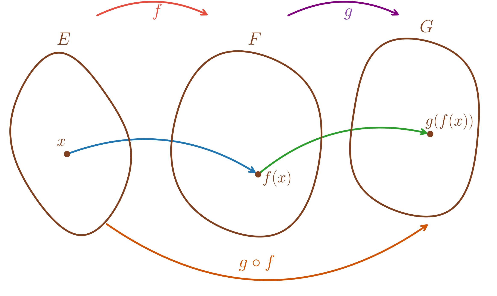
Soient \(f \in \mathscr{F}(E,F), g \in \mathscr{F}(F,G), h \in \mathscr{F}(G,H)\) telles que \(x\in E\), \(f(x) \in F\) et pour tout \(y\in F, g(y) \in G\).
On peut considérer \(g\circ f \in \mathscr{F}(E,G)\), \(h \circ (g\circ f) \in \mathscr{F}(E,H)\), \(h\circ g \in \mathscr{F}(G,H)\) et \((h \circ g)\circ f \in \mathscr{F}(E,H)\).
Alors \(h\circ(g \circ f) = (h\circ g) \circ f\). On note alors simplement, sans ambiguïté, \(h \circ g \circ f\).
D’abord, comme \(h \circ (g\circ f) \in \mathscr{F}(E,H)\) et \((h \circ g)\circ f \in \mathscr{F}(E,H)\), ces fonctions ont même ensembles de départ et d’arrivée.
Ensuite, pour \(x \in E\), \(h\circ(g \circ f)(x) = h\left((g \circ f)(x)\right) = h\left(g\left(f(x)\right)\right)\) et \((h \circ g)\circ f (x) = (h \circ g)\left(f(x)\right) = h\left(g\left(f(x)\right)\right)\).
Soient \(f \in \mathscr{F}(E,F)\) et \(g \in \mathscr{F}(F,G)\),
Si \(f\) et \(g\) sont injectives, \(g \circ f\) est injective,
Si \(f\) et \(g\) sont surjectives, \(g \circ f\) est surjective,
Si \(f\) et \(g\) sont bijectives, \(g \circ f\) est bijective.
Soient \(x,x' \in E\) tels que \((g \circ f)(x) = (g \circ f)(x')\).
Alors, \(g(f(x)) = g(f(x'))\). Or, \(g\) est injective donc \(f(x)=f(x')\). Or, \(f\) est injective donc \(x=x'\).
Soit \(z \in G\), il existe \(y \in F\) tel que \(g(y) = z\) car \(g\) est surjective.
Or, \(f\) est surjective donc il existe \(x \in E\) tel que \(f(x) = y\) et donc \((g \circ f)(x) = g(f(x)) = g(y) =z\).
Si \(f\) et \(g\) sont bijectives, \(f\) et \(g\) sont injectives et surjectives donc d’après ce qui précède, \(g \circ f\) est injective et surjective donc bijective.
Soient \(f \in \mathscr{F}(E,F)\) et \(g \in \mathscr{F}(F,G)\),
Si \(g \circ f\) est injective, \(f\) est injective,
Si \(g \circ f\) est surjective, \(g\) est surjective.
Soient \(x,x' \in E\) tels que \(f(x)=f(x')\) alors \(g(f(x))=g(f(x'))\).
Or, \(g \circ f\) est injective donc \(x=x'\).
Soit \(z \in G\). \(g \circ f\) est surjective donc il existe \(x \in E\) tel que \(g(f(x)) = z\). Donc avec \(y = f(x) \in F\), \(g(y) = z\).
Soit \(f \in \mathscr{F}(E,F)\) bijective.
Soit \(y \in F\), il existe \(x_y \in E\) unique tel que \(f\left(x_y\right) = y\). On définit la fonction réciproque de \(f\), notée \(f^{-1}\), comme \[\begin{array}{lllll} f^{-1} & : & F & \to & E \\ & & y & \mapsto & x_y \end{array} .\]
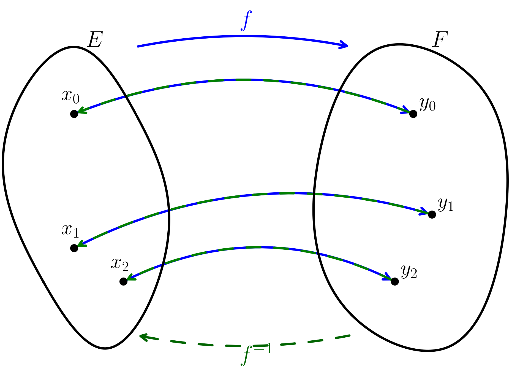
Soit \(f \in \mathscr{F}(E,F)\) bijective,
\(f \circ f^{-1} = \mathrm{id}_{F}\) et \(f^{-1} \circ f = \mathrm{id}_{E}\).
Soit \(y \in F\) et \(x_y \in E\), l’unique antécédent de \(y\) par \(f\).
Alors, \(f \circ f^{-1} (y) = f\left(f^{-1}(y)\right) = f\left(x_y\right) = y\).
Soit \(x \in E\), et \(y = f(x) \in F\) tel que \(x = x_y\),
Alors \(f^{-1} \circ f(x) = f^{-1}(f(x_y)) = f^{-1}(y) = x_y = x\).
Soit \(f \in \mathscr{F}(E,F)\) bijective, \(f^{-1}\) est bijective.
\(f \circ f^{-1} = \mathrm{id}_{F}\) qui est bijective donc injective donc \(f^{-1}\) est injective.
\(f^{-1} \circ f = \mathrm{id}_{E}\) qui est bijective donc surjective donc \(f^{-1}\) est surjective.
Donc \(f^{-1}\) est injective et surjective donc bijective.
Dans le cas où \(f\) est bijective, la préimage d’un ensemble \(A \in \mathscr{P}(E)\) coincide avec l’image directe de cet ensemble par \(f^{-1}\). En particulier, on a bien \(f\left(f^{-1}\right)(A) = A.\)
Soit \(f \in \mathscr{F}(E,F)\),
Soit \(A \in \mathscr{P}(E)\) non vide, la restriction de \(f\) à \(A\), notée \(f_{|A}\) est la fonction \(\begin{array}{lllll} f_{|A} & : & A & \to & F \\ & & x & \mapsto & f(x) \end{array} \in \mathscr{F}(A,F)\).
Soit \(E' \text{ tel que }E\subset E'\), un prolongement de \(f\) à \(E'\) est une fonction \(g \in \mathscr{F}(E',F)\) telle que \(g_{|E} = f\).
Soient \(\begin{array}{lllll} f & : & \mathbb{R}^{+\star} & \to & \mathbb{R} \\ & & x & \mapsto & \frac{1}{x} \end{array}\), \(\begin{array}{lllll} g_1 & : & \mathbb{R}& \to & \mathbb{R}\\ & & x & \mapsto & \frac{1}{x} \mbox{ si $x \neq 0$}\\ & & 0 & \mapsto & 0 \end{array}\) et \(\begin{array}{lllll} g_2 & : & \mathbb{R}& \to & \mathbb{R}\\ & & x & \mapsto & \frac{1}{x} \mbox{ si $x \neq 0$}\\ & & 0 & \mapsto & \frac{\pi^2}{6} \end{array}.\)
Alors, \(g_1,g_2\) sont des prolongements de \(g\).
\(g\) n’admet pas de prolongement continu à \(\mathbb{R}\) car \(g(x) \xrightarrow[x \to 0^+]{} +\infty\).
Soit \(E\) un ensemble non vide. Une suite d’éléments de \(E\) est indexée par \(\mathbb{N}\) est une fonction \(u \in \mathscr{F}(\mathbb{N},E)\) notée \(\left(u_n\right)_{n\in \mathbb{N}}\).
Pour \(I\) un ensemble quelconque d’indices, une famille d’éléments de \(E\) est une fonction \(\begin{array}{lllll} x & : & I & \to & E \\ & & i & \mapsto & x(i) \end{array}\). \(x(i)\) est alors noté \(x_i\) est la famille \(\left(x_i\right)_{i\in I}\).
Pour \(E = \mathscr{F}(\mathbb{R},\mathbb{R})\) et \(I = \mathbb{R}\), on peut considérer la famille \(\left(f_\alpha\right)_{\alpha\in\mathbb{R}}\) avec \(\begin{array}{lllll} f_\alpha & : & \mathbb{R} & \to & \mathbb{R} \\ & & x & \mapsto & x+\alpha \end{array}\).
Soit \(E\) un ensemble quelconque et \(I\) un ensemble quelconque non vide.
A partir d’une famille \(\left(A_i\right)_{i\in I}\) d’éléments de \(\mathscr{P}(E)\), on peut considérer les sous-ensembles de E \[\begin{aligned} \bigcup_{i\in I}A_i & = \left\{x \in E / \exists i \in I \text{ tel que }x\in A_i\right\} \\ \text{ et }\bigcap_{i\in I}A_i & = \left\{x \in E / \forall i \in I, x\in A_i\right\} \\ \end{aligned}\]
Si \(I = [\![ 1,n ]\!]\) avec \(n \in \mathbb{N}^{\star}\), on les note aussi \(\bigcup_{i=1}^n A_i\) et \(\bigcap_{i=1}^n A_i\).
Avec \(E =\mathbb{R}\) et \(I = \mathbb{N}\), pour \(n \in \mathbb{N}\), on pose \(A_n =\left[\frac{1}{n+1},2\right]\).
On a alors \(\bigcup_{n \in \mathbb{N}} A_n = ]0,2]\).
Avec \(E =\mathbb{R}\) et \(I = \mathbb{N}\), pour \(n \in \mathbb{N}\), on pose \(B_n =[\sqrt{n},+\infty[\).
On a alors \(\bigcap_{n \in \mathbb{N}} B_n = \emptyset\).
Soit \(E\) un ensemble non vide. Une relation binaire \(\mathscr{R}\) de \(E\) est définie par une propriété \((P)\) faisant intervenir deux éléments de \(E\).
Soient \(x,y \in E\), \(x\) et \(y\) ont une relation par \(\mathscr{R}\) (dans cet ordre) si \(x\) et \(y\) satisfont (dans cet ordre) \((P)\). On note alors \(x\mathscr{R}y\).
Soit \(E\) ensemble non vide, \(\mathscr{R}\) la relation d’égalité dans \(E\) est définie par \(x\mathscr{R}y \iff x = y\).
Soit \(E\) ensemble non vide, \(\mathscr{R}\) la relation d’inclusion dans \(\mathscr{P}(E)\) est définie par \(A\mathscr{R}B \iff A \subset B\).
\(\mathscr{R}\) la relation de divisibilité dans \(\mathbb{N}\) est définie par \(x\mathscr{R}y \iff \exists z \in N/ y=xy\).
Soit \(n \in \mathbb{N}\), \(\mathscr{R}_n\) la relation de congruence modulo \(n\) dans \(\mathbb{Z}\) est définie par \(x \mathscr{R}_n y \iff \exists z \in \mathbb{Z}/ x-y=nz\).
Soit \(\mathscr{R}\) une relation binaire de \(E\), \(\mathscr{R}\) est dite d’équivalence dans \(E\) si elle vérifie les trois propriétés suivantes
\[\begin{aligned} \text{(Réflexivité)}\quad &\forall x \in E, x\mathscr{R}x & \\ \text{(Symétrie)}\quad & \forall x,y \in E, x\mathscr{R}y &\iff y\mathscr{R}x \\ \text{(Transitivité)}\quad &\forall x,y,z \in E, x\mathscr{R}y \text{ et }y\mathscr{R}z &\Longrightarrow x\mathscr{R}z. \end{aligned}\]
Soit \(E\) un ensemble non vide, la relation d’égalité est une relation d’équivalence.
Soit \(n \in \mathbb{N}\), la relation de congruence modulo \(n\) dans \(\mathbb{Z}\) est une relation d’équivalence.
Soit \(x \in \mathbb{Z}\), \(x-x =0n\) donc \(\mathscr{R}_n\) est réflexive.
Soient \(x,y \in \mathbb{Z}\), et \(z \in \mathbb{N}\), \(x-y =nz \iff y-x=(-n)z\) donc \(\mathscr{R}_n\) est symétrique.
Soient \(x,y,z \in \mathbb{Z}\), si \(x \mathscr{R}_n y\), il existe \(k \in \mathbb{Z}\) tel que \(x-y = nk\) et si \(y \mathscr{R}_n z\), il existe \(\ell \in \mathbb{Z}\) tel que \(y-z = n\ell\).
On a alors \(x-z = (x-y)+(y-z) = n(k+\ell)\) donc \(\mathscr{R}_n\) est transitive.
Si \(E =\mathscr{F}(\mathbb{N},\mathbb{R})\) et \(\mathscr{R}\) la relation binaire dans \(E\) définie par \((u_n)\mathscr{R}(v_n) \iff u_n \underset{n\to +\infty}{\sim} v_n\). Alors, \(\mathscr{R}\) est une relation d’équivalence.
Soit \((u_n) \in E\), \(\forall n \in \mathbb{N}, u_n = w_n u_n\) avec \((w_n)\) la suite constante égale à \(1\) qui tend vers \(1\).
Soient \((u_n), (v_n) \in E\), telles que \((u_n)\mathscr{R}(v_n)\). Il existe \((w_n) \in E\) telles que \(w_n \xrightarrow[n \to +\infty]{} 1\) et \(\forall n \in \mathbb{N}, u_n = v_n w_n\).
Comme \((w_n)\) a une limite strictement positive, il existe \(N \in \mathbb{N}\) tel que \(\forall n \geq N, w_n > 0\). \(\left(\frac{1}{w_n}\right)_{n \geq N}\) est donc définie, \(\frac{1}{w_n} \xrightarrow[n \to +\infty]{} 1\) et \(\forall n \geq N\), \(v_n = v_n\frac{1}{w_n}\).
Soient \((u_n), (v_n), (r_n) \in E\). Si \((u_n)\mathscr{R}(v_n)\), il existe \((w_n) \in E\) telles que \(w_n \xrightarrow[n \to +\infty]{} 1\) et \(\forall n \in \mathbb{N}, u_n = v_n w_n\).
Si \((v_n)\mathscr{R}(r_n)\), il existe \((w'_n) \in E\) telles que \(w'_n \xrightarrow[n \to +\infty]{} 1\) et \(\forall n \in \mathbb{N}, v_n = r_n w'_n\).
Et alors \(w_nw'_n \xrightarrow[n \to +\infty]{} 1\) et \(\forall n \in \mathbb{N}, u_n = r_n w'_n w_n\).
Classe d’équivalence de \(x_0 \in E\). \(\quad\)
Soit \(\mathscr{R}\) relation d’équivalence dans \(E\) et \(x_0 \in E\).
La classe d’équivalence de \(x_0\) est la partie de \(E\), notée \({\mathrm{C}\ell}_{\mathscr{R}}\left(x_0\right)\), définie par \[{\mathrm{C}\ell}_{\mathscr{R}}\left(x_0\right) = \left\{x \in E / x_0\mathscr{R}x\right\}.\]
\(\mathscr{R}\) est réflexive donc \(x_0\mathscr{R}x_0\) donc \(x_0 \in {\mathrm{C}\ell}_{\mathscr{R}}\left(x_0\right)\).
Soient \(x_0 \in E, x_1 \in E\) alors on a seulement les deux possibilités suivantes :
Soit \({\mathrm{C}\ell}_{\mathscr{R}}\left(x_0\right) \cap {\mathrm{C}\ell}_{\mathscr{R}}\left(x_1\right) = \emptyset\),
Soit \({\mathrm{C}\ell}_{\mathscr{R}}\left(x_0\right) = {\mathrm{C}\ell}_{\mathscr{R}}\left(x_1\right)\).
Si \({\mathrm{C}\ell}_{\mathscr{R}}\left(x_0\right) \cap {\mathrm{C}\ell}_{\mathscr{R}}\left(x_1\right) = \emptyset\), on ne peut pas avoir \({\mathrm{C}\ell}_{\mathscr{R}}\left(x_0\right) = {\mathrm{C}\ell}_{\mathscr{R}}\left(x_1\right)\) car sinon on aurait \({\mathrm{C}\ell}_{\mathscr{R}}\left(x_0\right) \cap {\mathrm{C}\ell}_{\mathscr{R}}\left(x_1\right) = {\mathrm{C}\ell}_{\mathscr{R}}\left(x_0\right) \neq \emptyset\).
Si \({\mathrm{C}\ell}_{\mathscr{R}}\left(x_0\right) \cap {\mathrm{C}\ell}_{\mathscr{R}}\left(x_1\right) \neq \emptyset\), il existe \(y \in {\mathrm{C}\ell}_{\mathscr{R}}\left(x_0\right) \cap {\mathrm{C}\ell}_{\mathscr{R}}\left(x_1\right)\). On alors \(y\mathscr{R}x_0\) et \(y\mathscr{R}x_1\) et même \(x_0\mathscr{R}y\) et \(x_1\mathscr{R}y\) par symétrie.
On a donc pour tout \(z_0 \in {\mathrm{C}\ell}_{\mathscr{R}}\left(x_0\right)\), \(y\mathscr{R}x_0\) et \(x_0\mathscr{R}z_0\) donc par transitivité, \(y\mathscr{R}z_0\). De plus, \(x_1\mathscr{R}y\) donc de nouveau par transitivité, \(x_1\mathscr{R}z_0\) donc \(z_0 \in {\mathrm{C}\ell}_{\mathscr{R}}\left(x_1\right)\) et on en déduit \({\mathrm{C}\ell}_{\mathscr{R}}\left(x_0\right) \subset {\mathrm{C}\ell}_{\mathscr{R}}\left(x_1\right)\).
Puis, pour tout \(z_1 \in {\mathrm{C}\ell}_{\mathscr{R}}\left(x_1\right)\), \(y\mathscr{R}x_1\) et \(x_1\mathscr{R}z_1\) donc par transitivité, \(y\mathscr{R}z_1\). De plus, \(x_0\mathscr{R}y\) donc de nouveau par transitivité, \(x_0\mathscr{R}z_1\) donc \(z_1 \in {\mathrm{C}\ell}_{\mathscr{R}}\left(x_0\right)\) et on en déduit \({\mathrm{C}\ell}_{\mathscr{R}}\left(x_1\right) \subset {\mathrm{C}\ell}_{\mathscr{R}}\left(x_0\right)\).
Donc \({\mathrm{C}\ell}_{\mathscr{R}}\left(x_0\right) = {\mathrm{C}\ell}_{\mathscr{R}}\left(x_1\right)\).
Soit \(n \in \mathbb{N}\), et \(\mathscr{R}_n\) la relation de congruence modulo \(n\) dans \(\mathbb{Z}\), \({\mathrm{C}\ell}_{\mathscr{R}_n}\left(0\right) = \left\{kn, k \in \mathbb{Z}\right\}\) et \({\mathrm{C}\ell}_{\mathscr{R}_n}\left(1\right) = \left\{kn+1, k \in \mathbb{Z}\right\}\).
Pour \(n=2\), on a les pairs et les impairs.
Soit \(\mathscr{R}\) une relation binaire de \(E\), \(\mathscr{R}\) est une relation d’ordre dans \(E\) si elle vérifie les trois propriétés suivantes
\[\begin{aligned} \text{(Réflexivité)}\quad & \forall x \in E, x\mathscr{R}x & \\ \text{(Antisymétrie)}\quad & \forall x,y \in E, x\mathscr{R}y \text{ et }y\mathscr{R}x &\iff x=y \\ \text{(Transitivité)}\quad &\forall x,y,z \in E, x\mathscr{R}y \text{ et }y\mathscr{R}z &\Longrightarrow x\mathscr{R}z. \end{aligned}\]
La relation \(\leq\) est une relation d’ordre dans \(\mathbb{R}\).
Soit \(E\) un ensemble, la relation d’inclusion est une relation d’ordre dans \(\mathscr{P}(E)\).
Pour \(A \in \mathscr{P}(E)\), \(A \subset A\).
Pour \(A,B \in \mathscr{P}(E)\), \(A \subset B \text{ et }B \subset A \iff A = B\).
Pour \(A,B,C \in \mathscr{P}(E)\), \(A \subset B \text{ et }B \subset C \Longrightarrow A \subset C\).
La relation de divisibilité dans \(\mathbb{N}\) est une relation d’ordre dans \(\mathbb{N}\).
Soit \(x \in \mathbb{N}\), \(x = 1x\).
Soient \(x,y \in \mathbb{N}\), si \(x\mathscr{R}y\), il existe \(k \in \mathbb{N}\) tel que \(y = kx\) et si \(y\mathscr{R}x\), il existe \(k' \in \mathbb{N}\) tel que \(x = k'y\). Donc \(y=kk'y\) donc si \(y \neq 0\), \(kk' = 1\) donc \(k=k'\) et \(x=y\) et si \(y = 0\), \(x=0=y\).
Soient \(x,y,z \in \mathbb{N}\), si \(x\mathscr{R}y\), il existe \(k \in \mathbb{N}\) tel que \(y = kx\) et si \(y\mathscr{R}z\), il existe \(k' \in \mathbb{N}\) tel que \(z = k'y\). Donc \(z=kk'x\) donc \(x\mathscr{R}z\).
Sur \(\mathbb{Z}\), la relation de divisibilité définie par \[x\mathscr{R}y \iff \exists k \in \mathbb{Z}, y=kx\] n’est pas antisymétrique. On a par exemple \(1 = (-1)(-1)\) et \(-1 = (-1)1\) mais \(1 \neq -1\).
Relation d’ordre total/partiel. \(\quad\)
Soit \(\mathscr{R}\) relation d’ordre dans \(E\). \(\mathscr{R}\) est dite totale si \[\forall x,y \in E, x\mathscr{R}y \text{ ou }y\mathscr{R}x.\]
La relation d’ordre \(\leq\) usuel sur \(\mathbb{R}\) est totale.
Soit \(\mathscr{R}\) relation d’ordre dans \(E\). \(\mathscr{R}\) est dite partielle si elle n’est pas totale. C’est-à-dire s’il existe \(x_0,y_0 \in E\) tels qu’on n’a \(\text{ni } x_0\mathscr{R}y_0, \text{ ni } y_0\mathscr{R}x_0.\)
Soit \(E\) un ensemble possédant au moins deux éléments distincts, la relation d’inclusion dans \(\mathscr{P}(E)\) est une relation d’ordre partiel.
Notons \(x_0,x_1 \in E\) tels que \(x_0 \neq x_1\). Alors, avec \(A = \left\{x_0\right\}\) et \(B = \left\{x_1\right\}\), on n’a ni \(A \subset B\), ni \(B \subset A\).